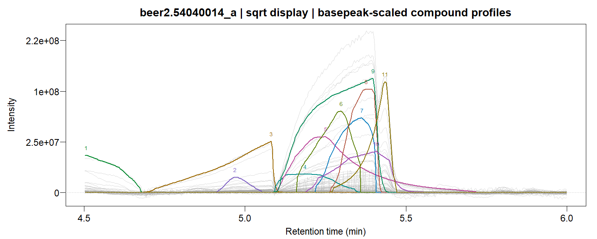

GCMSdeco() accepts an experiment directory and analyzes
its chromatograms together. Each sample gets its own time-varying PSF,
smooth background and log-concave compound profiles. Coupled
factorization shares mass spectra across samples and returns one
consensus compound library with a sample-by-compound area table.
Organize and fit an experiment
chromatograms/
standards/
alkanes.cdf
beer1/
injection001.cdf
injection002.cdf
beer2/
injection003.cdf
library(GCMSprime)
experiment <- GCMSdeco("chromatograms", output_dir="beer_results",
family=quasipoisson("identity"), precluster=32L,
batch=list(plots=TRUE))
experiment$samples
experiment$areas
coef(experiment, normalize="l1")
GIC(experiment)
plot(experiment, sample=1L, type="lines", file="sample1_traces.pdf")The standards subdirectory is reserved for calibration
chromatograms. Analytical samples are sorted using their acquisition
timestamps, including time-zone information. Group labels come from
their relative directories. Each sample uses the nearest alkane standard
in acquisition time. A single standard can calibrate the whole
experiment; alkanes_file= explicitly selects a particular
calibration.
For files without acquisition timestamps, supply their relative paths in the intended run order:
Outputs and memory use
The output directory contains:
-
samples.csv: acquisition order, group, calibration file and sample result paths. -
areas.csv: integrated compound areas; undetected occurrences haveNA. -
consensus.msp: the common spectral library, with every positive fitted ion. -
experiment.xlsx: sample information, consensus compounds, packed spectra and areas. -
experiment.rds: the experiment object. -
samples/<sample_id>/: fitted sample RDS, NIST-compatible MSP and Excel results, plus trace and heatmap PDFs whenbatch$plots=TRUE.
Spectral text cells are unwrapped and list fragments by decreasing intensity. Sample objects retain factor matrices and CDF paths. Plots reload the required observations. Coupled fitting stores observations and large weight/offset arrays on disk and processes them sample by sample. Shared spectra and compact alignment summaries remain in memory.
sample1 <- readRDS(experiment$paths[1L])
sample1$compounds
plot(sample1, type="profiles", file="sample1_profiles_spectra.pdf")
fitted(experiment, sample=1L)The coupled NMF tutorial gives the mathematical model, alignment, spectral grouping, local updates and simulation results. Its validation includes three samples with all 258 mass channels, differing scan grids, concentration-dependent tails and compounds absent from half the samples. All seven signal noise families are supported.
Scan spacing and exposure
Observed matrices stay on their native scan grids. Monotone alignment changes profile coordinates and bin widths; its Jacobian preserves integrated peak areas. The model is evaluated directly at the original scan times.
By default, GCMSprime models the vendor’s exported intensities with unit exposure. Quadrupole acquisition distributes scan time across the mass range. The effective time per mass also depends on scan step size, scan averaging and acquisition settings; see the Agilent method documentation. ANDI files can contain arbitrary abundance units, so scan duration and the number of exported mass peaks alone do not identify physical count exposure.
If integrated counts and their durations are known, supply exposure explicitly:
experiment <- GCMSdeco("chromatograms", output_dir="count_results",
family=poisson("identity"),
batch=list(exposure=function(metadata, time) metadata$scan_duration))Here scan_duration is appropriate only when it
represents the integration duration of each reported count. A calibrated
per-mass duration can instead be returned by the function. Metadata
vectors are restricted to the fitted scans. With an identity link,
exposure multiplies the latent mean. It is incorporated into profile and
background design values during fitting.
Calibrated beer example
Two beer chromatograms were analyzed with their shared alkane ladder, using 32 outcome groups for initialization and all 518 mass channels for coupled refinement. In the 4.5–6 minute window, the model links 20 detected occurrences into 16 consensus compounds. Adjusted weighted R² is 0.993 and 0.995 for the two samples. The complete directory workflow, including PSF calibration, independent fits, coupling and exports, took 41.43 seconds on an eight-core Intel i9-11950H workstation.

Across the complete chromatograms, the analysis retains all 518 channels and links 599 detected occurrences into 517 consensus compounds:
| Sample | Detected occurrences | Adjusted weighted R² | Sample GIC |
|---|---|---|---|
| 502131900304_a | 325 | 0.9861 | 16,800,722 |
| 54040014_a | 274 | 0.9850 | 16,746,915 |
Independent initialization took 671.31 s and 594.48 s, including PSF estimation and their initial exports. Starting from these cached fits, coupled refinement and the final Excel, MSP and diagnostic PDF exports took 777.01 s. The joint GIC is 32,934,308; it counts common spectra once and amplitudes separately for each detected occurrence. Sample GIC values count each sample’s spectra and are available for inspecting its individual fit.
The fitted components can be inspected sample by sample, and common
spectra can be searched against a library with each sample’s
alkane-derived retention indices. Pass library= and
search= to GCMSdeco() to include those
identifications in the per-sample MSP and Excel exports.
Set coupled=FALSE to export independent fits. Set
batch=list(resume=TRUE) to reuse independently fitted
samples whose source-file metadata and fitting settings match the cache.
Coupled refinement is then computed from those fits.
See GCMSbatch for options and single-sample deconvolution for diagnostic plots, profile fitting and spectral recovery.